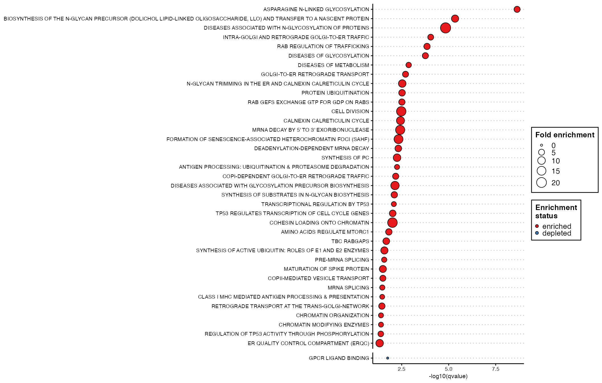
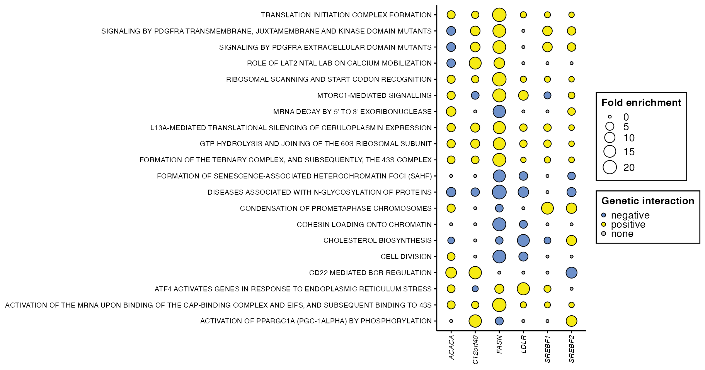

Running fedup with multiple test sets
Catherine Ross
Source:vignettes/fedup_mutliTest.rmd
fedup_mutliTest.rmdThis is an R package that tests for enrichment and depletion of user-defined pathways using a Fisher’s exact test. The method is designed for versatile pathway annotation formats (eg. gmt, txt, xlsx) to allow the user to run pathway analysis on custom annotations. This package is also integrated with Cytoscape to provide network-based pathway visualization that enhances the interpretability of the results.
This vignette will explain how to use fedup when testing multiple sets of genes for pathway enrichment and depletion.
System prerequisites
R version ≥ 4.1
R packages:
- CRAN: openxlsx, tibble, dplyr, data.table, ggplot2, ggthemes, forcats, RColorBrewer
- Bioconductor: RCy3
Installation
Install fedup from Bioconductor:
if(!requireNamespace("BiocManager", quietly = TRUE))
install.packages("BiocManager")
BiocManager::install("fedup")Or install the development version from Github:
devtools::install_github("rosscm/fedup", quiet = TRUE)Load necessary packages:
Running the package
Input data
Load test genes (geneMulti) and pathways annotations (pathwaysGMT):
Take a look at the data structure:
str(geneMulti)
#> List of 13
#> $ background : chr [1:17804] "SLCO4A1" "PGRMC2" "LDLR" "RABL3" ...
#> $ FASN_negative : chr [1:379] "SLCO4A1" "PGRMC2" "LDLR" "RABL3" ...
#> $ FASN_positive : chr [1:298] "CDC34" "PRKCE" "SMARCC2" "EIF3A" ...
#> $ ACACA_negative : chr [1:276] "SLCO4A1" "PGRMC2" "RABL3" "C12orf49" ...
#> $ ACACA_positive : chr [1:313] "RAB18" "MORC2" "DPM1" "BCL2" ...
#> $ LDLR_negative : chr [1:394] "LCMT1" "SREBF2" "DOLPP1" "ALG9" ...
#> $ LDLR_positive : chr [1:386] "RAB18" "PHF12" "SMARCD1" "USP14" ...
#> $ SREBF1_negative : chr [1:262] "SREBF2" "MBTPS2" "CNOT2" "TSC1" ...
#> $ SREBF1_positive : chr [1:218] "PHF5A" "RNF7" "KHDRBS1" "UBR4" ...
#> $ SREBF2_negative : chr [1:299] "LDLR" "C12orf49" "PAPSS1" "ARL1" ...
#> $ SREBF2_positive : chr [1:315] "KCTD5" "MTF2" "BRD9" "TSC1" ...
#> $ C12orf49_negative: chr [1:376] "LDLR" "ACSL1" "SREBF2" "MOGS" ...
#> $ C12orf49_positive: chr [1:215] "SAR1A" "BAG6" "UBA5" "TMED10" ...
str(head(pathwaysGMT))
#> List of 6
#> $ REGULATION OF PLK1 ACTIVITY AT G2 M TRANSITION%REACTOME%R-HSA-2565942.1 : chr [1:84] "CSNK1E" "DYNLL1" "TUBG1" "CKAP5" ...
#> $ GLYCEROPHOSPHOLIPID BIOSYNTHESIS%REACTOME%R-HSA-1483206.4 : chr [1:126] "PCYT1B" "PCYT1A" "PLA2G4D" "PLA2G4B" ...
#> $ MITOTIC PROPHASE%REACTOME DATABASE ID RELEASE 74%68875 : chr [1:134] "SETD8" "NUMA1" "NCAPG2" "LMNB1" ...
#> $ ACTIVATION OF NF-KAPPAB IN B CELLS%REACTOME%R-HSA-1169091.1 : chr [1:67] "PSMA6" "PSMA3" "PSMA4" "PSMA1" ...
#> $ CD28 DEPENDENT PI3K AKT SIGNALING%REACTOME DATABASE ID RELEASE 74%389357 : chr [1:22] "CD28" "THEM4" "AKT1" "TRIB3" ...
#> $ UBIQUITIN-DEPENDENT DEGRADATION OF CYCLIN D%REACTOME DATABASE ID RELEASE 74%75815: chr [1:52] "PSMA6" "PSMA3" "PSMA4" "PSMA1" ...To see more info on this data, run ?geneDouble or ?pathwaysGMT. You could also run example("prepInput", package = "fedup") or example("readPathways", package = "fedup") to see exactly how the data was generated using the prepInput() and readPathways() functions. ? and example() can be used on any other functions mentioned here to see their documentation and run examples.
The sample geneMulti list object contains thirteen vector elements: background, FASN_negative, FASN_positive, ACACA_negative, ACACA_positive, LDLR_negative, LDLR_positive, SREBF1_negative, SREBF1_positive, SREBF2_negative, SREBF2_positive, C12orf49_negative, and C12orf49_positive. The background consists of all genes that the test sets (in this case all sets besides background) will be compared against. FASN_negative consists of genes that form negative genetic interactions with the FASN gene after CRISPR-Cas9 knockout. FASN_positive consists of genes that form positve genetic interactions with FASN. The remaining elements contain genes forming genetic interactions with their respective genes (ACACA, LDLR, SREBF1, SREBF2, C12orf49). If you’re interested in seeing how this data set was constructed, check out the code. Also, the paper the data was taken from is found here.
As an example, FASN is a fatty acid synthase, so we would expect to see enrichment of the negative interactions for pathways associated with sensitization of fatty acid synthesis, as well as enrichment of the positive interactions for pathways associated with suppression of the function. Conversely, we expect to find depletion for pathways not at all involved with FASN biology. Let’s see!
Pathway analysis
Now use runFedup on the sample data:
fedupRes <- runFedup(geneMulti, pathwaysGMT)
#> Warning in inputObject(genes, pathways): 28.081% of genes overlap across your test gene sets (enrichment
#> results may be similar across tests).
#> Running fedup with:
#> => 12 test set(s)
#> + FASN_negative: 379 genes
#> + FASN_positive: 298 genes
#> + ACACA_negative: 276 genes
#> + ACACA_positive: 313 genes
#> + LDLR_negative: 394 genes
#> + LDLR_positive: 386 genes
#> + SREBF1_negative: 262 genes
#> + SREBF1_positive: 218 genes
#> + SREBF2_negative: 299 genes
#> + SREBF2_positive: 315 genes
#> + C12orf49_negative: 376 genes
#> + C12orf49_positive: 215 genes
#> => 17804 background genes
#> => 1437 pathway annotations
#> All done!The fedupRes output is a list of length length(which(names(geneMulti) != "background")), corresponding to the number of test sets in geneMulti (i.e., 12).
View fedup results for FASN_negative sorted by pvalue:
set <- "FASN_negative"
print(head(fedupRes[[set]][which(fedupRes[[set]]$status == "enriched"),]))
#> pathway
#> 1: ASPARAGINE N-LINKED GLYCOSYLATION%REACTOME DATABASE ID RELEASE 74%446203
#> 2: BIOSYNTHESIS OF THE N-GLYCAN PRECURSOR (DOLICHOL LIPID-LINKED OLIGOSACCHARIDE, LLO) AND TRANSFER TO A NASCENT PROTEIN%REACTOME%R-HSA-446193.1
#> 3: DISEASES ASSOCIATED WITH N-GLYCOSYLATION OF PROTEINS%REACTOME DATABASE ID RELEASE 74%3781860
#> 4: INTRA-GOLGI AND RETROGRADE GOLGI-TO-ER TRAFFIC%REACTOME DATABASE ID RELEASE 74%6811442
#> 5: RAB REGULATION OF TRAFFICKING%REACTOME DATABASE ID RELEASE 74%9007101
#> 6: DISEASES OF GLYCOSYLATION%REACTOME%R-HSA-3781865.1
#> size real_frac expected_frac fold_enrichment status
#> 1: 286 8.179420 1.53336329 5.334300 enriched
#> 2: 78 3.693931 0.42125365 8.768901 enriched
#> 3: 17 2.110818 0.09548416 22.106472 enriched
#> 4: 183 4.749340 0.99415862 4.777246 enriched
#> 5: 120 3.693931 0.62345540 5.924933 enriched
#> 6: 139 3.957784 0.74702314 5.298074 enriched
#> real_gene pvalue qvalue
#> 1: MOGS,DOLPP1,ALG9,ALG12,ALG3,MPDU1,... 1.596605e-12 2.294321e-09
#> 2: DOLPP1,ALG9,ALG12,ALG3,MPDU1,ALG8,... 6.358461e-09 4.568554e-06
#> 3: MOGS,ALG9,ALG12,ALG3,MPDU1,MGAT2,... 3.054616e-08 1.463161e-05
#> 4: ARL1,RAB18,RAB3GAP2,VPS52,NAA35,TMED9,... 2.516179e-07 9.039372e-05
#> 5: RAB18,TSC1,RAB3GAP2,TSC2,TBC1D20,RAB10,... 4.945154e-07 1.421237e-04
#> 6: MOGS,ALG9,ALG12,ALG3,MPDU1,MGAT2,... 7.240716e-07 1.734151e-04
print(head(fedupRes[[set]][which(fedupRes[[set]]$status == "depleted"),]))
#> pathway size
#> 1: GPCR LIGAND BINDING%REACTOME%R-HSA-500792.3 454
#> 2: OLFACTORY SIGNALING PATHWAY%REACTOME DATABASE ID RELEASE 74%381753 396
#> 3: CLASS A 1 (RHODOPSIN-LIKE RECEPTORS)%REACTOME%R-HSA-373076.7 323
#> 4: NEURONAL SYSTEM%REACTOME DATABASE ID RELEASE 74%112316 379
#> 5: PEPTIDE LIGAND-BINDING RECEPTORS%REACTOME%R-HSA-375276.5 195
#> 6: KERATINIZATION%REACTOME DATABASE ID RELEASE 74%6805567 217
#> real_frac expected_frac fold_enrichment status real_gene pvalue
#> 1: 0.0000000 2.3702539 0.0000000 depleted 0.000318537
#> 2: 0.0000000 1.9096832 0.0000000 depleted 0.001508862
#> 3: 0.0000000 1.6906313 0.0000000 depleted 0.003316944
#> 4: 0.5277045 2.0950348 0.2518834 depleted KCNK2,PRKAB1 0.026904721
#> 5: 0.0000000 1.0166255 0.0000000 depleted 0.057057149
#> 6: 0.0000000 0.8425073 0.0000000 depleted 0.079543380
#> qvalue
#> 1: 0.01760530
#> 2: 0.05420587
#> 3: 0.10361845
#> 4: 0.42024004
#> 5: 0.57670567
#> 6: 0.67813171Here we see the strongest enrichment for the ASPARAGINE N-LINKED GLYCOSYLATION pathway. Given that FASN mutant cells show a strong dependence on lipid uptake, this enrichment for negative interactions with genes involved in glycosylation is expected. We also see significant enrichment for other related pathways, including DISEASES ASSOCIATED WITH N-GLYCOSYLATION OF PROTEINS and DISEASES OF GLYCOSYLATION. Conversely, we see significant depletion for functions not associated with these processes, such as OLFACTORY SIGNALING PATHWAY, GPCR LIGAND BINDING and KERATINIZATION. Nice!
Let’s also view fedup results for FASN_positive, sorted by pvalue:
set <- "FASN_positive"
print(head(fedupRes[[set]][which(fedupRes[[set]]$status == "enriched"),]))
#> pathway
#> 1: L13A-MEDIATED TRANSLATIONAL SILENCING OF CERULOPLASMIN EXPRESSION%REACTOME%R-HSA-156827.3
#> 2: GTP HYDROLYSIS AND JOINING OF THE 60S RIBOSOMAL SUBUNIT%REACTOME DATABASE ID RELEASE 74%72706
#> 3: CAP-DEPENDENT TRANSLATION INITIATION%REACTOME DATABASE ID RELEASE 74%72737
#> 4: EUKARYOTIC TRANSLATION INITIATION%REACTOME%R-HSA-72613.3
#> 5: TRANSLATION INITIATION COMPLEX FORMATION%REACTOME%R-HSA-72649.3
#> 6: RIBOSOMAL SCANNING AND START CODON RECOGNITION%REACTOME DATABASE ID RELEASE 74%72702
#> size real_frac expected_frac fold_enrichment status
#> 1: 112 7.382550 0.4718041 15.64749 enriched
#> 2: 113 7.382550 0.4774208 15.46340 enriched
#> 3: 120 7.382550 0.5167378 14.28684 enriched
#> 4: 120 7.382550 0.5167378 14.28684 enriched
#> 5: 59 5.369128 0.2583689 20.78086 enriched
#> 6: 59 5.369128 0.2583689 20.78086 enriched
#> real_gene pvalue qvalue
#> 1: EIF3A,RPL35,EIF3D,RPS3,EIF3G,EIF4H,... 9.628857e-18 8.562503e-15
#> 2: EIF3A,RPL35,EIF3D,RPS3,EIF3G,EIF4H,... 1.191719e-17 8.562503e-15
#> 3: EIF3A,RPL35,EIF3D,RPS3,EIF3G,EIF4H,... 4.970934e-17 1.785808e-14
#> 4: EIF3A,RPL35,EIF3D,RPS3,EIF3G,EIF4H,... 4.970934e-17 1.785808e-14
#> 5: EIF3A,EIF3D,RPS3,EIF3G,EIF4H,RPS5,... 5.796507e-15 1.388264e-12
#> 6: EIF3A,EIF3D,RPS3,EIF3G,EIF4H,RPS5,... 5.796507e-15 1.388264e-12
print(head(fedupRes[[set]][which(fedupRes[[set]]$status == "depleted"),]))
#> pathway
#> 1: GPCR LIGAND BINDING%REACTOME%R-HSA-500792.3
#> 2: NEURONAL SYSTEM%REACTOME DATABASE ID RELEASE 74%112316
#> 3: OLFACTORY SIGNALING PATHWAY%REACTOME DATABASE ID RELEASE 74%381753
#> 4: CLASS A 1 (RHODOPSIN-LIKE RECEPTORS)%REACTOME%R-HSA-373076.7
#> 5: G ALPHA (I) SIGNALLING EVENTS%REACTOME%R-HSA-418594.6
#> 6: TRANSMISSION ACROSS CHEMICAL SYNAPSES%REACTOME DATABASE ID RELEASE 74%112315
#> size real_frac expected_frac fold_enrichment status real_gene pvalue
#> 1: 454 0.0000000 2.370254 0.0000000 depleted 0.002390509
#> 2: 379 0.0000000 2.095035 0.0000000 depleted 0.005261657
#> 3: 396 0.0000000 1.909683 0.0000000 depleted 0.007449873
#> 4: 323 0.0000000 1.690631 0.0000000 depleted 0.017309826
#> 5: 396 0.3355705 2.106268 0.1593199 depleted AHCYL1 0.034808044
#> 6: 238 0.0000000 1.314311 0.0000000 depleted 0.035700272
#> qvalue
#> 1: 0.03240718
#> 2: 0.05953545
#> 3: 0.07989155
#> 4: 0.13667154
#> 5: 0.21016453
#> 6: 0.21198880Results for any test set can be indexed by its name:
names(fedupRes)
#> [1] "FASN_negative" "FASN_positive" "ACACA_negative"
#> [4] "ACACA_positive" "LDLR_negative" "LDLR_positive"
#> [7] "SREBF1_negative" "SREBF1_positive" "SREBF2_negative"
#> [10] "SREBF2_positive" "C12orf49_negative" "C12orf49_positive"Dot plot
Prepare data for plotting via dplyr and tidyr:
fedupPlot <- fedupRes %>%
bind_rows(.id = "set") %>%
separate(col = "set", into = c("set", "sign"), sep = "_") %>%
subset(qvalue < 0.05) %>%
mutate(log10qvalue = -log10(qvalue)) %>%
mutate(pathway = gsub("\\%.*", "", pathway)) %>%
as.data.frame()Since we’re dealing with multiple test sets here, it’s important we create the set and sign columns in fedupPlot to distinguish between them. Take a look at ?dplyr::bind_rows for details on how the output fedup results list (fedupRes) was bound into a single dataframe and ?tidyr::separate for how the set and sign columns were created.
Plot significant results (qvalue < 0.05) in the form of a dot plot via plotDotPlot. Facet the points by the set and sign columns and colour by sign:
p <- plotDotPlot(
df = fedupPlot,
xVar = "log10qvalue",
yVar = "pathway",
xLab = "-log10(qvalue)",
fillVar = "sign",
fillLab = "Genetic interaction",
fillCol = c("#6D90CA", "#F6EB13"),
sizeVar = "fold_enrichment",
sizeLab = "Fold enrichment") +
facet_grid("sign ~ set", scales = "free_y", space = "free") +
theme(strip.text.y = element_blank())
print(p)
Look at all those chick… enrichments! This is a bit overwhelming, isn’t it? How do we interpret these 244 fairly redundant pathways in a way that doesn’t hurt our tired brains even more? Oh I know, let’s first try another ggplot-based plot.
We can instead plot the degree of fold enrichment for a subset of pathways across our test sets. First, select the top 20 results to plot from fedupRes:
topPath <- fedupRes %>%
bind_rows(.id = "set") %>%
arrange(desc(fold_enrichment)) %>%
slice(1:20) %>%
select(pathway) %>%
unlist() %>%
as.character()View the selected pathways:
print(topPath)
#> [1] "DISEASES ASSOCIATED WITH N-GLYCOSYLATION OF PROTEINS%REACTOME DATABASE ID RELEASE 74%3781860"
#> [2] "TRANSLATION INITIATION COMPLEX FORMATION%REACTOME%R-HSA-72649.3"
#> [3] "RIBOSOMAL SCANNING AND START CODON RECOGNITION%REACTOME DATABASE ID RELEASE 74%72702"
#> [4] "ACTIVATION OF THE MRNA UPON BINDING OF THE CAP-BINDING COMPLEX AND EIFS, AND SUBSEQUENT BINDING TO 43S%REACTOME%R-HSA-72662.3"
#> [5] "MTORC1-MEDIATED SIGNALLING%REACTOME%R-HSA-166208.3"
#> [6] "COHESIN LOADING ONTO CHROMATIN%REACTOME%R-HSA-2470946.1"
#> [7] "FORMATION OF THE TERNARY COMPLEX, AND SUBSEQUENTLY, THE 43S COMPLEX%REACTOME%R-HSA-72695.2"
#> [8] "CELL DIVISION%REACTOME%R-HSA-68884.3"
#> [9] "SIGNALING BY PDGFRA EXTRACELLULAR DOMAIN MUTANTS%REACTOME DATABASE ID RELEASE 74%9673770"
#> [10] "SIGNALING BY PDGFRA TRANSMEMBRANE, JUXTAMEMBRANE AND KINASE DOMAIN MUTANTS%REACTOME DATABASE ID RELEASE 74%9673767"
#> [11] "MRNA DECAY BY 5' TO 3' EXORIBONUCLEASE%REACTOME DATABASE ID RELEASE 74%430039"
#> [12] "ACTIVATION OF PPARGC1A (PGC-1ALPHA) BY PHOSPHORYLATION%REACTOME%R-HSA-2151209.1"
#> [13] "CD22 MEDIATED BCR REGULATION%REACTOME DATABASE ID RELEASE 74%5690714"
#> [14] "ATF4 ACTIVATES GENES IN RESPONSE TO ENDOPLASMIC RETICULUM STRESS%REACTOME DATABASE ID RELEASE 74%380994"
#> [15] "FORMATION OF SENESCENCE-ASSOCIATED HETEROCHROMATIN FOCI (SAHF)%REACTOME DATABASE ID RELEASE 74%2559584"
#> [16] "L13A-MEDIATED TRANSLATIONAL SILENCING OF CERULOPLASMIN EXPRESSION%REACTOME%R-HSA-156827.3"
#> [17] "GTP HYDROLYSIS AND JOINING OF THE 60S RIBOSOMAL SUBUNIT%REACTOME DATABASE ID RELEASE 74%72706"
#> [18] "CHOLESTEROL BIOSYNTHESIS%REACTOME%R-HSA-191273.4"
#> [19] "ROLE OF LAT2 NTAL LAB ON CALCIUM MOBILIZATION%REACTOME%R-HSA-2730905.2"
#> [20] "CONDENSATION OF PROMETAPHASE CHROMOSOMES%REACTOME%R-HSA-2514853.2"Now subset fedupRes across all test sets for the pathways stored in topPath:
fedupPlot <- fedupRes %>%
bind_rows(.id = "set") %>%
separate(col = "set", into = c("set", "sign"), sep = "_") %>%
subset(pathway %in% topPath) %>%
mutate(pathway = gsub("\\%.*", "", pathway)) %>%
mutate(sign = ifelse(status == "depleted", "none", sign)) %>%
mutate(sign = factor(sign, levels = c("negative", "positive", "none"))) %>%
group_by(set, pathway) %>%
top_n(1, wt = fold_enrichment) %>%
as.data.frame()Plot via plotDotPlot, this time using set as our x-axis variable:
p <- plotDotPlot(
df = fedupPlot,
xVar = "set",
yVar = "pathway",
xLab = NULL,
fillVar = "sign",
fillLab = "Genetic interaction",
fillCol = c("#6D90CA", "#F6EB13", "grey80"),
sizeVar = "fold_enrichment",
sizeLab = "Fold enrichment") +
theme(
panel.grid.major.y = element_blank(),
axis.text.x = element_text(face = "italic", angle = 90,
vjust = 0.5, hjust = 1))
print(p)
Ok cool, that’s easier to look at than the plot before. Now let’s summarize these pathways even more efficiently using EnrichmentMap!
Enrichment map
First, make sure to have Cytoscape downloaded and and open on your computer. You’ll also need to install the EnrichmentMap (≥ v3.3.0) and AutoAnnotate apps.
Then format results for compatibility with EnrichmentMap using writeFemap:
resultsFolder <- tempdir()
writeFemap(fedupRes, resultsFolder)
#> Wrote out EM-formatted fedup results file to /var/folders/mh/_0z2r5zj3k75yhtgm6l7xy3m0000gn/T//RtmpEHDYgL/femap_FASN_negative.txt
#> Wrote out EM-formatted fedup results file to /var/folders/mh/_0z2r5zj3k75yhtgm6l7xy3m0000gn/T//RtmpEHDYgL/femap_FASN_positive.txt
#> Wrote out EM-formatted fedup results file to /var/folders/mh/_0z2r5zj3k75yhtgm6l7xy3m0000gn/T//RtmpEHDYgL/femap_ACACA_negative.txt
#> Wrote out EM-formatted fedup results file to /var/folders/mh/_0z2r5zj3k75yhtgm6l7xy3m0000gn/T//RtmpEHDYgL/femap_ACACA_positive.txt
#> Wrote out EM-formatted fedup results file to /var/folders/mh/_0z2r5zj3k75yhtgm6l7xy3m0000gn/T//RtmpEHDYgL/femap_LDLR_negative.txt
#> Wrote out EM-formatted fedup results file to /var/folders/mh/_0z2r5zj3k75yhtgm6l7xy3m0000gn/T//RtmpEHDYgL/femap_LDLR_positive.txt
#> Wrote out EM-formatted fedup results file to /var/folders/mh/_0z2r5zj3k75yhtgm6l7xy3m0000gn/T//RtmpEHDYgL/femap_SREBF1_negative.txt
#> Wrote out EM-formatted fedup results file to /var/folders/mh/_0z2r5zj3k75yhtgm6l7xy3m0000gn/T//RtmpEHDYgL/femap_SREBF1_positive.txt
#> Wrote out EM-formatted fedup results file to /var/folders/mh/_0z2r5zj3k75yhtgm6l7xy3m0000gn/T//RtmpEHDYgL/femap_SREBF2_negative.txt
#> Wrote out EM-formatted fedup results file to /var/folders/mh/_0z2r5zj3k75yhtgm6l7xy3m0000gn/T//RtmpEHDYgL/femap_SREBF2_positive.txt
#> Wrote out EM-formatted fedup results file to /var/folders/mh/_0z2r5zj3k75yhtgm6l7xy3m0000gn/T//RtmpEHDYgL/femap_C12orf49_negative.txt
#> Wrote out EM-formatted fedup results file to /var/folders/mh/_0z2r5zj3k75yhtgm6l7xy3m0000gn/T//RtmpEHDYgL/femap_C12orf49_positive.txtPrepare a pathway annotation file (gmt format) from the pathway list you passed to runFedup using the writePathways function (you don’t need to run this function if your pathway annotations are already in gmt format, but it doesn’t hurt to make sure):
gmtFile <- tempfile("pathwaysGMT", fileext = ".gmt")
writePathways(pathwaysGMT, gmtFile)
#> Wrote out pathway gmt file to /var/folders/mh/_0z2r5zj3k75yhtgm6l7xy3m0000gn/T//RtmpEHDYgL/pathwaysGMT85357eb71527.gmtCytoscape is open right? If so, run these lines and let the plotFemap magic happen:
netFile <- tempfile("fedupEM_geneMulti", fileext = ".png")
plotFemap(
gmtFile = gmtFile,
resultsFolder = resultsFolder,
qvalue = 0.05,
chartData = "DATA_SET",
hideNodeLabels = TRUE,
netName = "fedupEM_geneMulti",
netFile = netFile
)
To note here, the EM nodes were coloured manually (by a similar palette of colours passed to plotDotPlot) in Cytoscape via the Change Colors option in the EM panel. A feature for automated dataset colouring is set to be released in version 3.3.2 of EnrichmentMap.
This has effectively summarized the 244 pathways from our dot plot into 27 unique biological themes (including 7 unclustered pathways). We can now see clear themes in the data pertaining to negative and positive genetic interactions related to our genes of interest.
Session information
sessionInfo()
#> R version 4.1.0 (2021-05-18)
#> Platform: x86_64-apple-darwin17.0 (64-bit)
#> Running under: macOS Big Sur 10.16
#>
#> Matrix products: default
#> BLAS: /Library/Frameworks/R.framework/Versions/4.1/Resources/lib/libRblas.dylib
#> LAPACK: /Library/Frameworks/R.framework/Versions/4.1/Resources/lib/libRlapack.dylib
#>
#> locale:
#> [1] en_CA.UTF-8/en_CA.UTF-8/en_CA.UTF-8/C/en_CA.UTF-8/en_CA.UTF-8
#>
#> attached base packages:
#> [1] stats graphics grDevices utils datasets methods base
#>
#> other attached packages:
#> [1] ggplot2_3.3.5 tidyr_1.1.3 dplyr_1.0.7 fedup_1.0.0 colorout_1.2-2
#>
#> loaded via a namespace (and not attached):
#> [1] bitops_1.0-7 matrixStats_0.59.0 fs_1.5.0
#> [4] usethis_2.0.1 devtools_2.4.2 RColorBrewer_1.1-2
#> [7] httr_1.4.2 rprojroot_2.0.2 repr_1.1.3
#> [10] tools_4.1.0 backports_1.2.1 bslib_0.2.5.1
#> [13] utf8_1.2.1 R6_2.5.0 DBI_1.1.1
#> [16] BiocGenerics_0.38.0 colorspace_2.0-2 withr_2.4.2
#> [19] uchardet_1.1.0 tidyselect_1.1.1 prettyunits_1.1.1
#> [22] processx_3.5.2 curl_4.3.2 compiler_4.1.0
#> [25] textshaping_0.3.5 graph_1.70.0 cli_3.0.0
#> [28] desc_1.3.0 labeling_0.4.2 sass_0.4.0
#> [31] scales_1.1.1 callr_3.7.0 pkgdown_1.6.1
#> [34] pbdZMQ_0.3-5 systemfonts_1.0.2 stringr_1.4.0
#> [37] digest_0.6.27 rmarkdown_2.9 R.utils_2.10.1
#> [40] base64enc_0.1-3 pkgconfig_2.0.3 htmltools_0.5.1.1
#> [43] sessioninfo_1.1.1 highr_0.9 fastmap_1.1.0
#> [46] ggthemes_4.2.4 rlang_0.4.11 farver_2.1.0
#> [49] jquerylib_0.1.4 generics_0.1.0 jsonlite_1.7.2
#> [52] zip_2.2.0 R.oo_1.24.0 RCurl_1.98-1.3
#> [55] magrittr_2.0.1 Matrix_1.3-4 Rcpp_1.0.6
#> [58] IRkernel_1.2 munsell_0.5.0 fansi_0.5.0
#> [61] lifecycle_1.0.0 R.methodsS3_1.8.1 stringi_1.6.2
#> [64] yaml_2.2.1 MASS_7.3-54 RJSONIO_1.3-1.4
#> [67] pkgbuild_1.2.0 plyr_1.8.6 grid_4.1.0
#> [70] parallel_4.1.0 forcats_0.5.1 crayon_1.4.1
#> [73] lattice_0.20-44 IRdisplay_1.0 knitr_1.33
#> [76] ps_1.6.0 pillar_1.6.1 igraph_1.2.6
#> [79] uuid_0.1-4 base64url_1.4 stats4_4.1.0
#> [82] pkgload_1.2.1 XML_3.99-0.6 glue_1.4.2
#> [85] evaluate_0.14 data.table_1.14.0 remotes_2.4.0
#> [88] png_0.1-7 vctrs_0.3.8 testthat_3.0.4
#> [91] gtable_0.3.0 purrr_0.3.4 assertthat_0.2.1
#> [94] cachem_1.0.5 openxlsx_4.2.4 xfun_0.24
#> [97] ragg_1.1.3 RCy3_2.12.3 signal_0.7-7
#> [100] tibble_3.1.2 dplR_1.7.2 memoise_2.0.0
#> [103] ellipsis_0.3.2